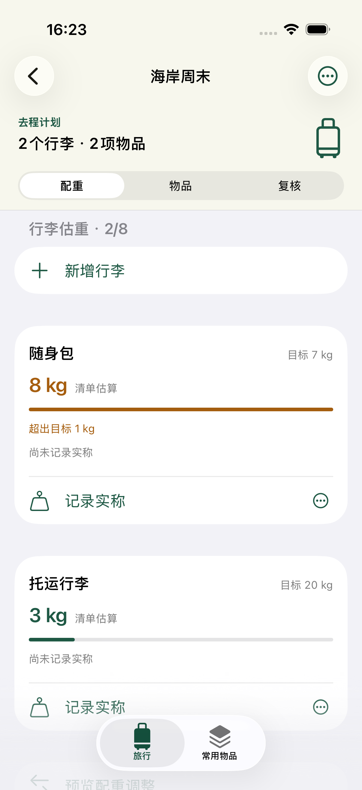
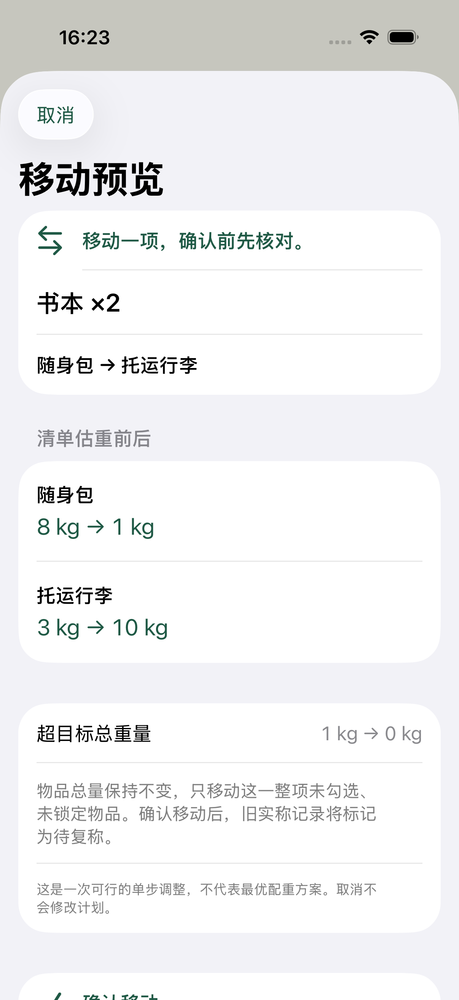
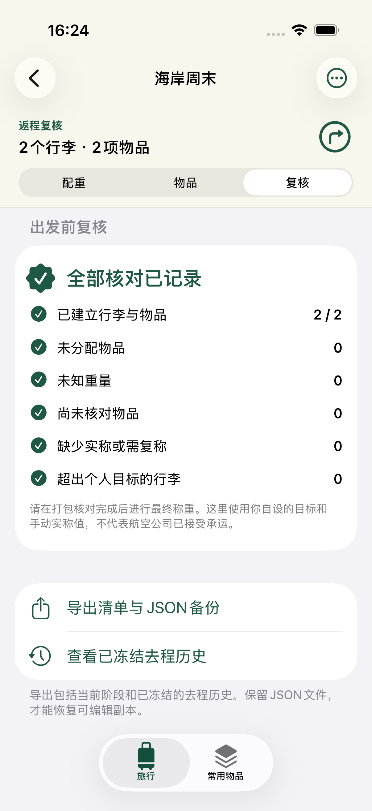

离线行李清单 / iPHONE + iPAD
带哪些，装哪包。每次称重，有据可查。
让清单记住每一次装包决定。将物品分配到不同的包，对照清单估算与手动实称，再用一份独立复核开始返程。
首发准备中
01 / 使用步骤
如何用 BagLedger 准备一次旅行
从空白旅行开始，也可复制自己的常用物品。先整理清单，再做最终称重，返程时另开一次复核。
建立旅行与行李
为旅行命名，添加各个行李，并分别设置个人重量目标。知道空包重量时再填写。目标是你自设的规划界限，不是航空公司规则。
添加物品并分配到包
为每行物品填写数量，按需填写每件重量，再分配到行李。未填的单重或空包重会保留为未知。从常用物品库复制的条目是旅行中的独立副本。
预览一次可行的移动
所有重量完整且物品均已分配后，可请求单步移动预览。它只把当前阶段未锁定、未勾选的一整行物品，从超出目标的包移到另一个包，并保证目标包移动后不超出其目标。先查看前后估算，再确认或取消。
先核对装包，再记录实称
整行数量都已装入或复核后再勾选。用你自己的秤称重，并手动输入读数。之后修改计划会让旧实称过期，因此请在装包核对完成后记录最终称重。
保存去程，带走副本
确认开始返程复核后，完整去程记录会被冻结。独立返程计划会清空勾选与实称。可导出便于阅读的文本清单或 JSON 旅行备份；有效 JSON 经预览确认后导入为新旅行，不替换已有记录。
02 / 重量记录
每个数字，都说清来处。
清单估算包含空包重，以及每行的数量 × 单重。实称是另一个由你手动记录的数字。
计算示例 · 不是 APP 截图
重量完整时，清单才能相加。
- 空包重量
- 1.0 kg
- 2 件 × 1.5 kg
- 3.0 kg
- 清单估算
- 4.0 kg
这里只演示计算方法。如果空包重或任一物品单重缺失，BagLedger 会显示已知小计与未知数量，不把未填值算成零。
未知，就保持未知
缺少重量的包不会得到完整估算。未分配物品也会保留为待完成事项。请求移动建议前，需要补齐重量并完成分配。
计划变了，就重新核对
修改计划、勾选状态或锁定状态后，旧实称会标记过期。原读数仍保留，但不计入当前核对。撤销一次移动，也不会让旧读数重新有效。
BagLedger 不会给行李称重、查询航空政策或确认物品允许携带。请使用自己的秤，并另行核对承运方的现行规则。
App 里的记录
同一旅程，三个时刻。
从超出个人目标的清单估算，到移动预览，再到独立的返程复核。

先看需要复核的重量。
随身包的清单估算为 8 kg，个人目标为 7 kg。此时尚未记录实称。

确认移动前，先看前后。
预览将书本 ×2 整行从随身包移至托运行李。两包估重分别从 8 变为 1 kg、3 变为 10 kg；超目标总重量从 1 降至 0 kg。

返程，重新核对。
返程复核显示全部核对已记录，同屏可导出清单与 JSON 备份，或查看已冻结的去程历史。
03 / 常见问题
装包前，先说清楚。
关于重量、挪包、历史与分享的具体说明。
BagLedger 会称重或查询航空限额吗？
不会。物品与空包的估重、个人目标，以及你自己的秤上读数，都需要手动填写。BagLedger 不测量重量，不提供航空政策核验，也不保证承运方接受行李。
不知道重量时，会怎样显示？
未知单重与空包重会保持未知。行李会显示已知小计及缺失重量信息，而不是完整估算。未填重量不会当成零，也不会据此确认行李符合目标。
移动建议就是最优配重吗？
不是。它基于完整清单估算与已分配物品，给出一次可行调整。只移动当前阶段未锁定、未勾选的一整行，降低超出各包目标的总重量，并让目标包移动后仍在其目标内。找不到建议，也不代表不存在更好的装法。
可以取消或撤销移动吗？
取消预览不会修改计划。只有最近一次已确认移动，且撤销仍有效时，才能撤销。之后编辑、切换阶段或重启 App 会清除这次撤销；预览后有编辑，也需要重新生成预览。
为什么手动实称显示已过期？
实称对应的是记录当时的计划。之后修改计划、勾选或锁定状态，会让它过期。原读数与时间仍保留，但不再算作当前核对。请先完成装包核对，再重新称重。
返程修改会影响去程历史吗？
不会。确认开始返程复核后，BagLedger 会保留完整去程计划的只读快照。独立返程计划会清空装包勾选和实称记录，之后的返程修改不会改变该快照。
需要账户吗？分享会包含什么？
不需要账户。旅行、常用物品库及文件导入导出均在本机处理，App 没有广告或远程统计。主动分享文本清单或 JSON 备份时，旅行与物品数据会发送给你选择的目标；没有云同步或实时协作。
可以保存、导出和恢复哪些内容？
可保存最多 20 个旅行，每阶段8个行李、200行物品；另可保存200项常用物品。每行数量为 1 至 100，勾选表示整行数量都已装入或复核。文本用于阅读或交接；不超过 2 MiB 的有效 BagLedger JSON 备份，可经预览导入为新旅行，并保留其中已有的去程历史。
04 / 支持
把经过写清楚，便于一起排查。
遇到问题时，请通过邮件说明 App 版本、设备型号和操作步骤。保存失败时请保留原本地文件与报错信息；卸载前，请先在 App 之外保存已导出记录的副本。
shuitian13@gmail.com邮件由你自愿发送。只有愿意向支持人员提供内容时，才附上旅行文件；请勿包含你希望保密的信息。
iOS 17+ · iPhone / iPad · g / kg / lb